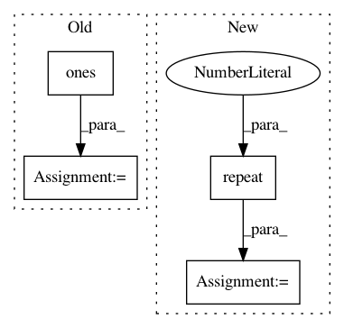

529456c17464022d42e1c343bec52f2d4d77e79b,gpytorch/likelihoods/noise_models.py,HomoskedasticNoise,forward,#HomoskedasticNoise#Any#,18
Before Change
var_shape = p.shape[:-2] + p.shape[-1:]
if len(var_shape) == 1:
log_noise = log_noise.squeeze(0)
variances = log_noise * torch.ones(*var_shape, dtype=log_noise.dtype, device=log_noise.device)
return DiagLazyTensor(variances)
class HeteroskedasticNoise(Module):
After Change
log_noise = self.log_noise
p = params[0] if isinstance(params, list) else params
n = p.shape[-2] if len(p.shape) > 1 else p.shape[-1]
log_noise_diag = log_noise.repeat(n, 1)
return DiagLazyTensor(log_noise_diag)
class MultitaskHomoskedasticNoise(HomoskedasticNoise):
In pattern: SUPERPATTERN
Frequency: 3
Non-data size: 4
Instances
Project Name: cornellius-gp/gpytorch
Commit Name: 529456c17464022d42e1c343bec52f2d4d77e79b
Time: 2018-10-29
Author: balandat@fb.com
File Name: gpytorch/likelihoods/noise_models.py
Class Name: HomoskedasticNoise
Method Name: forward
Project Name: osmr/imgclsmob
Commit Name: 7c3d0a5ea7405fe74cc31f5553f7c04d9804d42e
Time: 2019-03-02
Author: osemery@gmail.com
File Name: pytorch/pytorchcv/models/isqrtcovresnet.py
Class Name: Covpool
Method Name: forward
Project Name: keras-team/keras
Commit Name: 9d15c9611570bd3ecab52ed924c69a60ac3b2784
Time: 2016-01-03
Author: julien@fhtagn.net
File Name: tests/keras/layers/test_convolutional.py
Class Name:
Method Name: test_upsampling_2d